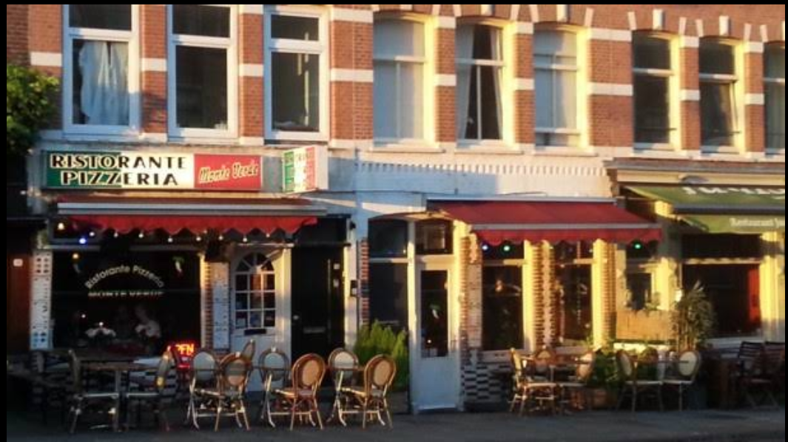

Monte Verde ligt op de levendige Albert Cuypstraat in Amsterdam De Pijp — één van de meest gezellige en bruisende buurten van de stad. Op loopafstand van de beroemde Albert Cuypmarkt, de dagelijkse buitenmarkt van Amsterdam.
Op slechts één metrostation afstand van het kloppende centrum van Amsterdam, en op een rustige wandeling van het wereldberoemde Museumplein met het Rijksmuseum en het Van Gogh Museum. De perfecte locatie voor een heerlijk Italiaans diner — voor, na of tussen het stadsgenieten door.
Italiaans restaurant in Amsterdam De Pijp
Kies hieronder uw vertrekpunt voor stap-voor-stap instructies.
Vlakbij het Rijksmuseum en het Van Gogh Museum? Wij zijn een korte wandeling verwijderd.